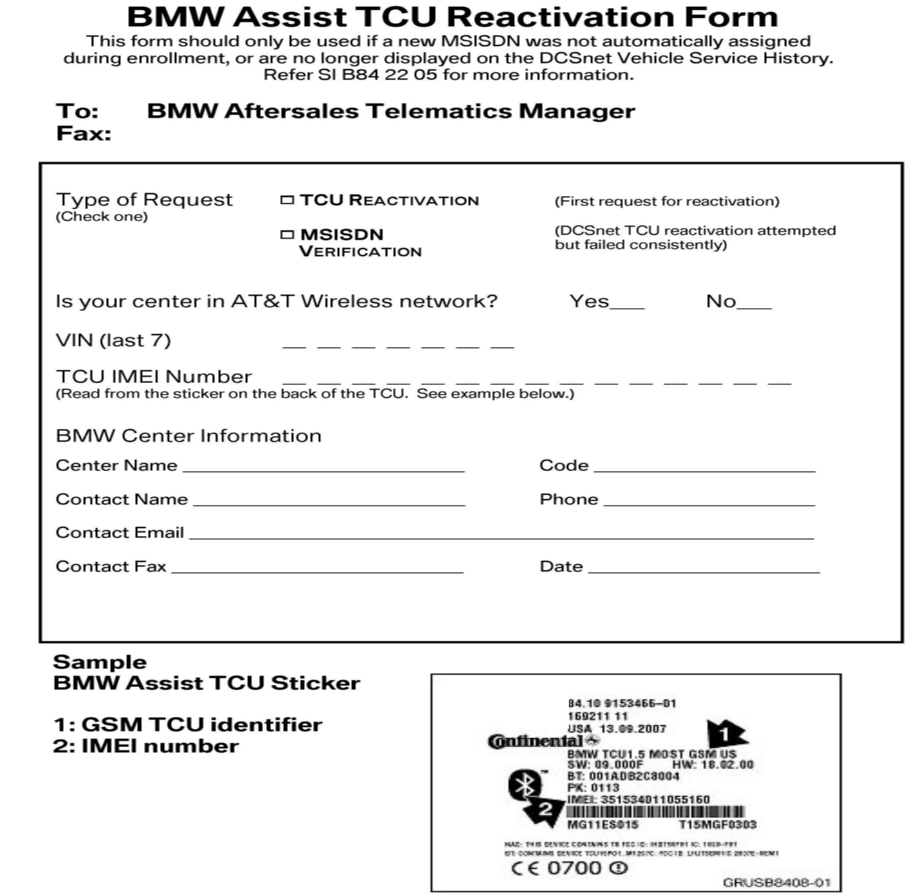

BMW Assist(R) - Reactivation Of BMW Assist(R) Services: Overview
SI B 84 22 05Communication Systems
April 2010
Technical Service
This Service Information bulletin supersedes SI B84 22 05 dated April 2009.
[NEW] designates changes to this revision
SUBJECT
Reactivation of BMW Assist Services
[NEW] MODEL
[NEW] SITUATION
The embedded phone in the Telematics Control Unit (TCU) is deactivated or was never activated with the wireless carrier; and/or the unit does not have a BMW Assist service initialized for one of the following reasons:
^ BMW Assist(TM) services have lapsed due to non-renewal by the current customer.
^ The vehicle was never enrolled (ESA not completed within 45 days of the Retail Date).
^ Certified Pre-Owned (CPO) or used vehicles where the new customer did not enroll in BMW Assist services.
^ The subscriber originally declined BMW Assist services.
^ A US spec vehicle that was purchased in one of the following ways:
1. Overseas by a person using the Military Sales purchase program.
2. Gray market vehicle.
3. A vehicle purchased overseas by a diplomat.
^ An Electronic Subscriber Agreement (ESA) cannot be created on any vehicle that is not registered in the BMW of North America, LLC warranty system. Prior to following the procedure in the bulletin, see SI B 01 12 04 (Warranty Coverage: "In Transit" Vehicles and Validation of US and Non-US Vehicles) for more details on registering a vehicle.
The TCU should not be replaced, but reactivated per the following procedure, if the customer wishes to enroll and receive BMW Assist services.
Non-US Spec vehicles cannot have BMW Assist activated.
ATTACHMENTS _B842205
view CDMA_Most-bus_Vehicles
view CDMA_Reactivation_Form
view GMS_MOST-bus_Vehicles.
view GMS_Reactivation_Form.
Warranty Information
This is NOT a warranty issue. All cost are the customer's responsibility.
Time
Estimated reactivation time: 20 minutes or less.
view IK_bus_Vehicles.

Reactivation Form
Reactivation of BMW Assist Services
BMW Assist TCU Reactivation Form/Warranty Information/Time
FAQ